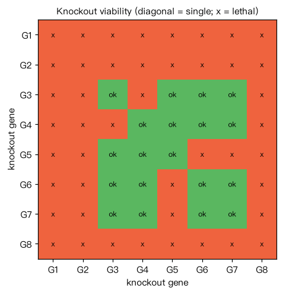

Example08 / 09
玩具代谢网络的单基因与双基因敲除——必需基因与合成致死对
用”网络扩张”（scope）判断可行性：从培养基中的底物出发，反应的全部底物都可得时反应可进行并产生产物； 能合成全部”生物量前体”即视为可存活。每个反应由一个或多个同工酶基因催化（任一基因存在即可）。 单基因敲除不能存活 -> 必需基因；两个单独敲除都存活、同时敲除不能存活 -> 合成致死对。 解读：同工酶（G3/G4）与平行通路（G5 与 G6–G7 两条旁路）提供冗余，因此产生合成致死对，这正是”冗余造就鲁棒、也造就弱点”。
Output输出图

Output文字输出
必需基因: ['G1', 'G2', 'G8']
合成致死对: [('G3', 'G4'), ('G5', 'G6'), ('G5', 'G7')]Code代码
# 用"网络扩张"（scope）判断可行性：从培养基中的底物出发，反应的全部底物都可得时反应可进行并产生产物；
# 能合成全部"生物量前体"即视为可存活。每个反应由一个或多个同工酶基因催化（任一基因存在即可）。
# 单基因敲除不能存活 -> 必需基因；两个单独敲除都存活、同时敲除不能存活 -> 合成致死对。
# 解读：同工酶（G3/G4）与平行通路（G5 与 G6–G7 两条旁路）提供冗余，因此产生合成致死对，这正是"冗余造就鲁棒、也造就弱点"。
from itertools import combinations
reactions = { # 反应: (底物, 产物, 催化基因)
"R1": ({"glc"}, {"g6p"}, {"G1"}),
"R2": ({"g6p"}, {"pyr"}, {"G2"}),
"R3": ({"pyr"}, {"accoa"}, {"G3", "G4"}), # 同工酶
"R4": ({"g6p"}, {"r5p"}, {"G5"}), # 通路 1
"R5": ({"pyr"}, {"x"}, {"G6"}), # 通路 2 的两步旁路
"R6": ({"x"}, {"r5p"}, {"G7"}),
"R7": ({"accoa"}, {"lipid"}, {"G8"}),
}
medium = {"glc"}; biomass = {"r5p", "lipid", "pyr"}
genes = sorted(set().union(*[r[2] for r in reactions.values()]))
def viable(knockout):
avail = set(medium); changed = True
active = {r for r, (_, _, gs) in reactions.items() if gs - set(knockout)}
while changed:
changed = False
for r in active:
sub, prod, _ = reactions[r]
if sub <= avail and not prod <= avail:
avail |= prod; changed = True
return biomass <= avail
essential = [g for g in genes if not viable([g])]
sl_pairs = [(a, b) for a, b in combinations([g for g in genes if g not in essential], 2) if not viable([a, b])]
print("必需基因:", essential)
print("合成致死对:", sl_pairs)
import numpy as np
import matplotlib.pyplot as plt
V = np.array([[viable([a] if a == b else [a, b]) for b in genes] for a in genes], float)
fig, ax = plt.subplots(figsize=(6.4, 4.6))
ax.imshow(V, cmap="RdYlGn", vmin=-0.3, vmax=1.3)
ax.set_xticks(range(len(genes)), genes); ax.set_yticks(range(len(genes)), genes)
for i in range(len(genes)):
for j in range(len(genes)):
ax.text(j, i, "ok" if V[i, j] else "x", ha="center", va="center", fontsize=8)
ax.set_xlabel("knockout gene"); ax.set_ylabel("knockout gene")
ax.set_title("Knockout viability (diagonal = single; x = lethal)", fontsize=10)
plt.tight_layout(); plt.show()Run在浏览器中运行
首次加载 Python 环境约需 20–40 秒；可以修改参数后重新运行。